Steering Control
Steering Control of Autonomous Vehicles in Obstacle Avoidance Maneuvers.
Contents
Vehicle model
Bicycle model
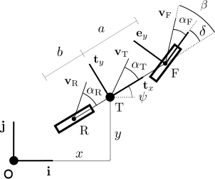
Nonlinear model
State vector
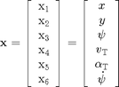
State equations
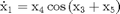
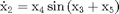
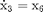
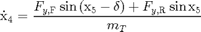
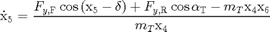
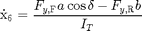
Slip angles
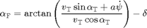

Linear model
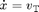
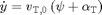
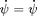
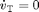
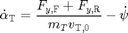
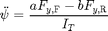
Neglecting equations of 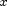 and 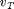
![$$ \left[ \begin{array}{c} \dot{y} \\ \dot{\psi} \\ \dot{\alpha}_T \\ \ddot{\psi} \end{array} \right] = \left[ \begin{array}{cccc} 0 & v_{T,0} & v_{T,0} & 0 \\ 0 & 0 & 0 & 1 \\ 0 & 0 & -\frac{K_F+K_R}{m_T v_{T,0}} & - \frac{m_T v_{T,0} + \frac{a K_F - b K_R}{v_{T,0}}}{m_T v_{T,0}} \\ 0 & 0 & - \frac{a K_F - b K_R}{I_T} & - \frac{a^2 K_F + b^2 K_R}{I_T v_{T,0}} \end{array} \right] \left[ \begin{array}{c} y \\ \psi \\ \alpha_T \\ \dot{\psi} \end{array} \right] + \left[ \begin{array}{c} 0 \\ 0 \\ \frac{K_F}{m_T v_{T,0}} \\ \frac{a K_F}{I_T} \end{array} \right] \delta $$](SteeringControl_eq75071.png)
Slip angles
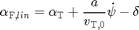
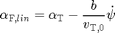
Tire model
Typical characteristic curve and slip angle definition

Pacejka
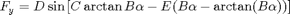
Linear
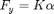
Comparison of tire models
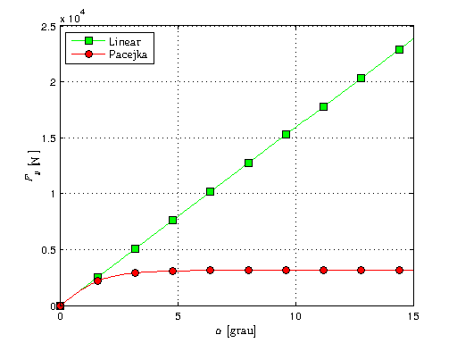Plant model
Nonlinear vehicle + Pacejka tire
TirePacejka with properties:
a0: 1
a1: 0
a2: 800
a3: 3000
a4: 50
a5: 0
a6: 0
a7: -1
a8: 0
a9: 0
a10: 0
a11: 0
a12: 0
a13: 0
VehicleSimpleNonlinear with properties:
mT: 1300
IT: 10000
a: 1.6154
b: 1.8846
mF0: 700
mR0: 600
lT: 3.5000
nF: 1
nR: 1
deltaf: 0
wT: 2
muy: 0.8000
tire: [1x1 VehicleDynamicsLateral.TirePacejka]

Reference model
Vehicle parameters
Linear system
A
0 20.0000 20.0000 0
0 0 0 1.0000
0 0 -3.0769 -0.9793
0 0 1.0768 -1.2322
B
0
0
1.5385
6.4616
C
1 0 0 0
LQR design
Q
1 0 0 0
0 1 0 0
0 0 1 0
0 0 0 1
R
1
K
1.0000 8.3851 4.1971 0.6460
Control law
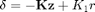
Simulation 1 - Lane change maneuver
Control - Step y
Reference - r = 2 m
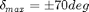
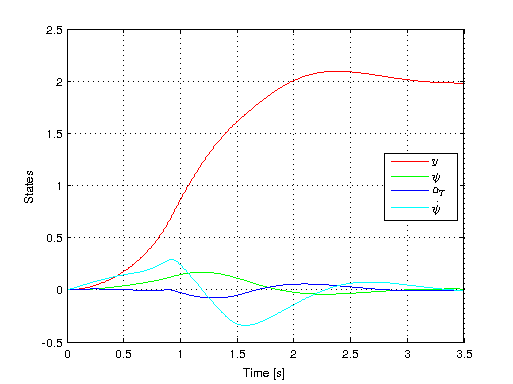
Simulation 2 - Double lane change maneuver
Control - Step y
if t<= 3 r = 2; else r = 0; end
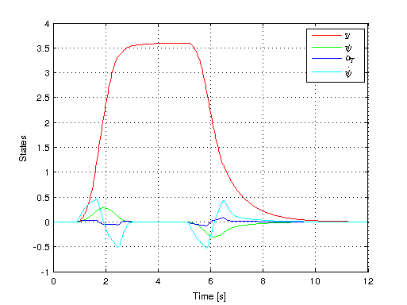